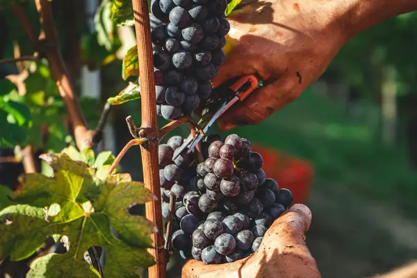

Nebbiolo grape

Photo: Andrea Cairone on Unsplash
Nebbiolo is a red grape known for cherry, rose, tar, truffle. Its best-known homes are Piedmont, Lombardy.
Origin and history
Ancient Piedmontese grape, first recorded in 1268 near Turin; the name probably comes from 'nebbia', the autumn fog that settles over the Langhe hills at harvest.
Where it grows
Piedmont (Barolo, Barbaresco, Roero, Gattinara, Ghemme, Carema, Langhe) and Lombardy's Valtellina; small plantings in California, Australia and Mexico.
Structure
Pale in colour but full-bodied, with high acidity, very high, grippy tannins and often 14% alcohol or more.
Aromas, young and aged
Young: sour cherry, rose petal, violet, liquorice and dried herbs. With age: tar, truffle, leather, dried roses and forest floor.
Ageing
Simple Langhe Nebbiolo drinks at 3–8 years; top Barolo and Barbaresco need 10 years and can age for 30 or more.
Also known as
Spanna (northern Piedmont), Chiavennasca (Valtellina), Picotener (Carema and Valle d'Aosta).
Good to know
Barolo DOCG must be aged at least 38 months before release (62 for Riserva), and its villages are mapped into officially named MGA vineyards.
Wine regions for Nebbiolo
Nebbiolo wines to try
Real bottles from The Wine Library.
Gaja Barbaresco
Piedmont · Barbaresco · Nebbiolo
Fragrant Nebbiolo: rose, red cherry, tar and firm tannins.
Food: Truffle risotto, braised beef
Giacomo Conterno Barolo Cascina Francia
Traditional Barolo: dried roses, cherries, liquorice and grippy tannins.
Food: Brasato al Barolo, tajarin
Nino Negri Sfursat 5 Stelle
Lombardy · Sforzato di Valtellina · Nebbiolo
Made from dried mountain Nebbiolo: cherry, dried fig, rose and spice, rich yet fresh.
Food: Braised beef, pizzoccheri, aged cheese
G.D. Vajra Barolo Albe
Fragrant, high-altitude Barolo: roses, cherry and fine tannin.
Food: Truffle pasta, braised beef
Bruno Giacosa Barolo Le Rocche del Falletto
Legendary Serralunga Barolo: powerful, perfumed and long-lived.
Food: Truffle, game
Bruno Giacosa Barbaresco Asili Riserva
Piedmont · Barbaresco · Nebbiolo
Iconic Barbaresco cru: refined, floral and complex.
Food: Truffle risotto, veal
Similar red grapes
Explore all grapes in the interactive guide
The Wine Reference newsletter
New wines, stories and career guides, one email a week at most.
Over 18s only. Unsubscribe any time with one click. Your email is stored securely by Kit and never shared.
Support The Wine Reference
This guide is free, with no paywall. If it helped you choose a bottle, you can buy me a glass and keep it growing.
🍷 Buy me a glass